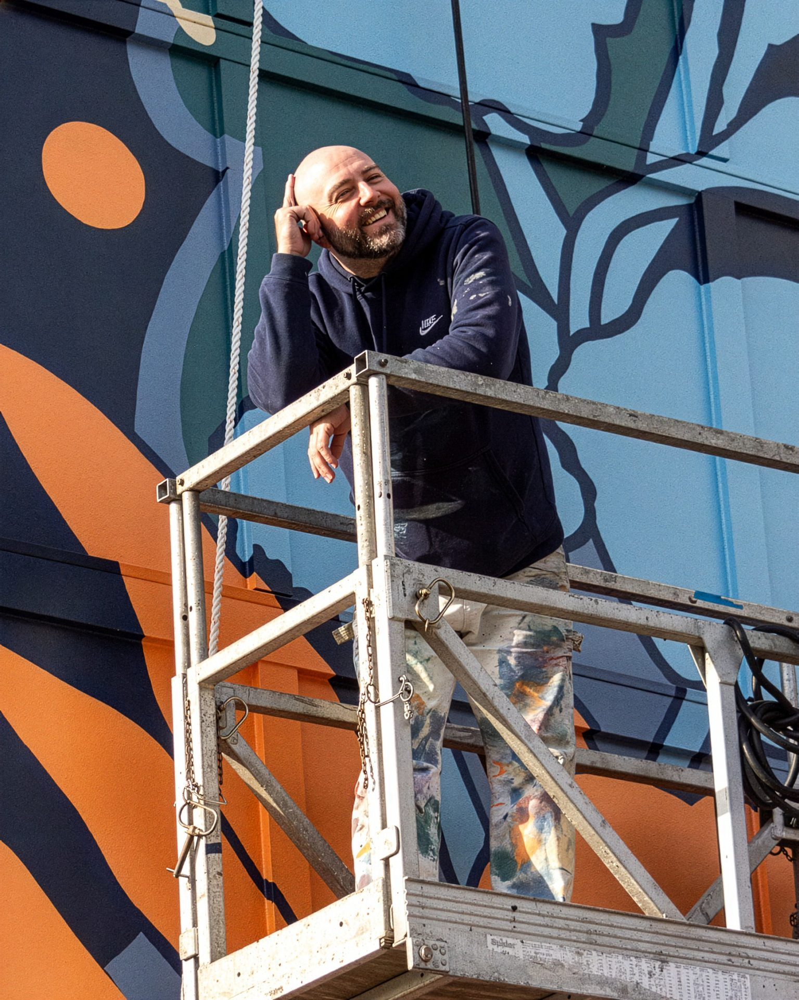

Adam
Stephenson
Practice
I'm a muralist. I paint really big paintings.
What I'm after is a threshold, a place where the physical world and the spirit realm occupy the same space at the same time. A mural can be a portal: an image that opens onto something deeper than what's visible, where elements become legible in relation to each other and the connections between things can actually be felt. The moment a musician disappears so completely into their instrument that they touch something beyond themselves. That's the kind of experience I want a wall to hold.
My best work draws from the people I've loved and the experiences that have mattered most, including the ones involving loss. Loss is profound and universal, and I don't avoid it in the work. Those are the pieces that feel like they matter in a different way than anything else I make.
Murals are persistent and public. They reach people who would never walk into a gallery, and they reach them by surprise, at the right moment, in a context they weren't expecting. I believe that encounter changes something. It doesn't happen for everyone. But for the right person at the right time, it does.
The work is at its best when there's genuine trust between the artist and the client. I'm selective about the projects I take on, and I'd rather talk through what that looks like upfront. If you're curious, reach out.
I am incredibly grateful that people trust me to create art for them.
Background
I grew up in Decatur, Alabama, and have been making work professionally since 2019. I studied fine art formally and learned the rest on walls. My practice has taken me from festival circuits across the Southeast to permanent commissions in Atlanta, Nashville, Chattanooga, and beyond.
Homecoming, my 2019 mural for the Alabama College of Art in Decatur, remains one of the most personal pieces I've made, painted in my hometown, in memory of my sister Lara Lee, who passed away in 2006. Not a memorial, but a celebration of the beautiful, ephemeral parts of life.
Curriculum Vitae
Selected Public Art & Commissioned Murals
- 2026The Hall of the Magician — 3D installation, The Upton Luxury Apartments (Gallery Residential), Atlanta, GA (in progress)
- 2024Appalachian Sunsets — Public Art Commission, City of Red Bank, TN
- 2024Nudie Blues (The Scottie) — Rangewater Real Estate, Nashville, TN
- 2024New Horizons — Harriet at Mid City, Huntsville, AL
- 2023American Classic — CarQuest, Decatur, AL
- 2021Playing the Sound of the Wind — Athens Main Street, Athens, AL
- 2019Homecoming — Alabama College of Art, Decatur, AL
Selected Collaborations & Assistantships
- 2023Patricia Hernandez — MERAKI, public mural, Atlanta, GA
- 2023Megan Mosholder — Spectrum Gradation, permanent installation, Museum of Contemporary Art, Atlanta, GA
- 2022Yehimi Cambrón — Now We Thrive, solo exhibition, Chapman Cultural Center, Spartanburg, SC
- 2022Megan Mosholder — Ad Astra, permanent outdoor installation, Microsoft, Atlantic Station, Atlanta, GA
- 2021Christina Kwan — The Unseen, Edgewood/Candler Park MARTA Station, Atlanta, GA
- 2021Yehimi Cambrón — Chinga La Migra, Museum of Contemporary Art, Atlanta, GA
- 2019Yehimi Cambrón — Monuments: Our Immigrant Mothers, Decatur, GA
Selected Festivals & Live Art
- 2024–25Forward Warrior — Atlanta, GA (2024, 2025)
- 2024Atlanta Crossroads Mural Festival — Atlanta, GA
- 2022–23Riverbend Festival (live mural performance) — Chattanooga, TN
- 2022Off the Tracks — Co-organizer & participant, Atlanta, GA
- 2022Pieces of Pullman — Pullman Yards, Atlanta, GA
- 2020Burnin' Bridges Mural Festival — Chattanooga, TN
Selected Illustration & Design
- 2025Community Mural Program — Digital community mural designs, Wal-Mart, various locations
- 2023Inman Park Festival — Poster and apparel design, Atlanta, GA
- —Capturing the Spirit of Oakland — Poster and apparel design, Atlanta, GA
Press & Features
- 2022A North Alabama Mural Trail Artist's Experience — Podcast appearance
- 2022Off the Tracks Mural Festival — WABE Radio interview
- 2021Mural on Merchants Alley in Athens Finished — WHNT press feature
- 2019Go Dark: A Wild East Story — Documentary feature
- 2019Decatur Native Creating Mural on Second Avenue — Decatur Daily